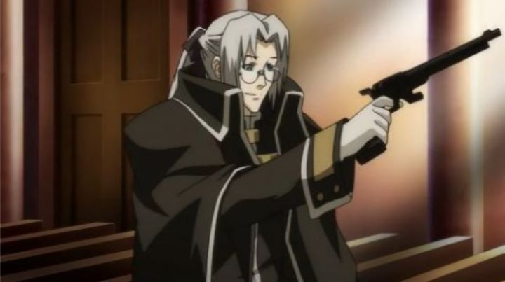

I'm happy that I finally got around to watching the 2005 anime "Trinity Blood," even if it was over a decade later. The series still seems to come up in conversation now and again, being broadcast on television around the time when anime fandom was reaching its peak in North America. It represented much of what made anime cool: it's about cyberpunk nazi vampires. More important than that, old fans seem to remember that the original novels' author, Sunao Yoshida, died suddenly before the series was finished, infamously leaving the saga without a proper ending. In the opening minutes of the show, we watch scenes past quickly: one seems to be of a priest with a machine gun shooting at a vampire on the moon. Is it relavent to the plot? Not really, but man, does it look cool. "Trinity Blood" is set nearly a millenia into the future, after a massive apocolyptic war. Now, humans and vampires co-exist in an uneasy peace, in a setting that looks inspired from 19th century German and Slavic culture, but with the occasional use of flying jetpacks, spaceships, and "ancient technology" called computers. On the human side, the Vatican church reigns, with internal factions at political odds with one another: one advisor tries her best to encourage the young Pope to use subtle, less-violent tactics and diplomacy to keep vampire violence under control, while the other advisor contstantly encourages all-out war against the heathens, in the name of God.The lead character in this complex web is Abel Nightroad, a traveling priest for the Vatican, answering to the "peaceful" advisor. At first glance, he seems a bit clumsy, absent-minded, but well-meaning, and often begging for food to make up for his pittiful salary (or doing his best with a cheap cup of tea and hundreds-of-calories-worth of sugar). But when threatened by vampires, Abel's true form emerges: he is a "Crusnik," a being one-level higher than vampires. As he puts it so elegantly: "vampires feed on humans, and we feed on vampires." Thus, Abel is the Vatican's secret weapon among a clergy of well-trained assassins and bodyguards, fighting back when necessary against rogue vampires who seek to raise their kind above that of humans, led by Abel's brother, Cain (notice the biblical reference in the names).Fairly quickly, I recognized "Trinity Blood" to effectively be "Trigun" mixed with "Hellsing." A quick online search shows this is a common sentiment. Abel himself is a pretty blatant rip-off of Vash the Stampede: both are tall, skinny, and normally goofy, but able to become serious and seemingly invincible in a snap. Abel even has his own version of the "alien history" thing, as well as the part of his brother being the powerful final enemy. For "Hellsing," not only do vampires play a major part of the story, but the antagonists even wear uniforms that look eerily similar to Nazi coats, although the villains in "Trinity Blood" are generally much "prettier." This all sounds like a bad thing, but on the contrary: there are a few story issues in the former shows, especially "Trigun," so I welcome the chance for a redo. Besides, doesn't "Trigun" X "Hellsing" sound awesome? "Trinity Blood" seems complicaetd, especially with all the different factions and political motivations in the background. In the end, the plot tends to simplify down to "stop bad guy," so it's not as hard to follow as you might imagine. The show is separated into a series of story arcs, ranging from two to five episodes each, and most of the arcs don't depend on each other, further allowing a new viewer to jump in had they missed a few episodes. The stories are generally interesting, covering a variety of angles, using humor, action and horror in different ways. While the overall show isn't as complicated or as deep as it might seem, the individual stories can get a bit more complicated than they need to at times.But what about the ending? Yes, the novels are left unfinished, but according to Wikipedia, both the anime and manga take their own liberties in adapting the story. Despite that, the anime "Trinity Blood" still struggles a bit in the final two-episode arc, bringing back characters the show had seemingly forgotten for an explosive climax. And in the final few minutes cut the final battle in the middle, appending a couple seemingly random scenes to give a sense of where the story would go from here. Studio Gonzo was better around this period at making shows with a definitive ending, and it's a shame they didn't have the courage or vision to bring "Trinity Blood" to a more satisfying conclusion. But the ride was fun while it lasted. The production values for the show impressed me. Character designs are super cool and elegant, with every character being elongated, with handsome faces and menacing eyes. It felt like a mixture of "Death Note" and "Code Geass" in style: it might not be for everyone, but for me, it represents classic anime design at its finest. Environments and complicated weapon designs are also impressive, if sometimes a bit impractical. The animation wasn't bad either... during important scenes. Unfortunately, animation can be inconsistent, and it's easy to find less important scenes (outside important conversations or battles) where animation just drops to a low level. Generally, the whole thing still looks great, only limited by common technical issues of the period. Music is good, although it can't seem to decide if it wants to rely on dramatic choir hymns, bar-room jazz, or vocal tracks with English lyrics. The English dub was generally good, although a handful of characters sound a bit annoying quickly, and don't grow out of it.Aside from a handful of issues, "Trintiy Blood" surprised me. It didn't really reach to be beyond just "very good," but it accomplishes what it sets out to do, and therefore, is a lot better than most anime, and still holds up well today. In television, it might be one of my favorite vampire franchises.
- "Ani" More reviews can be found at : https://2danicritic.github.io/ Previous review: review_Trigun_-_Badlands_Rumble Next review: review_Trinity_Seven